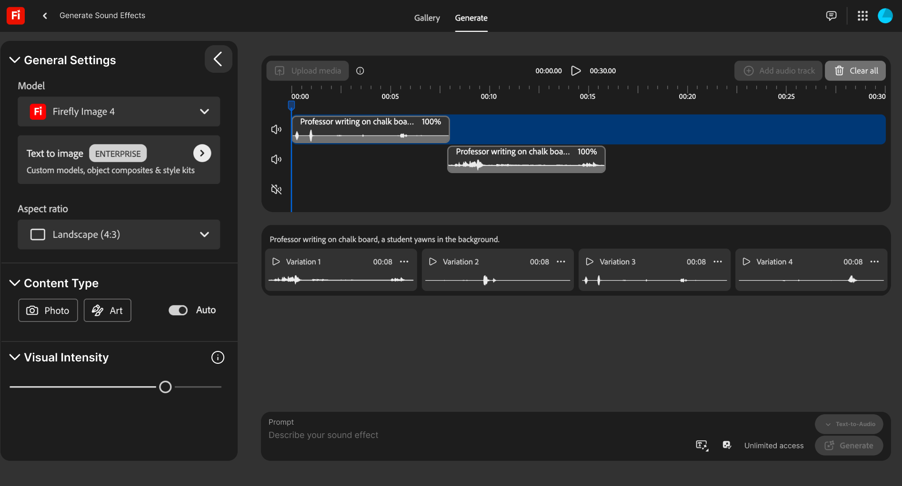
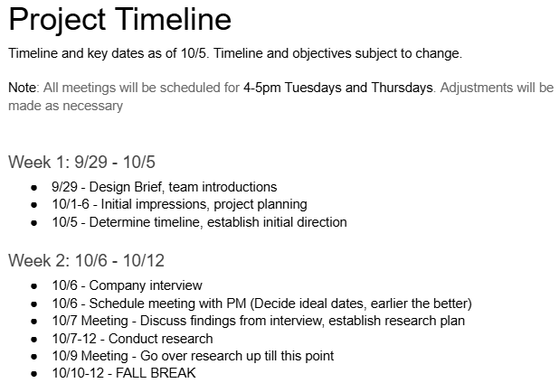
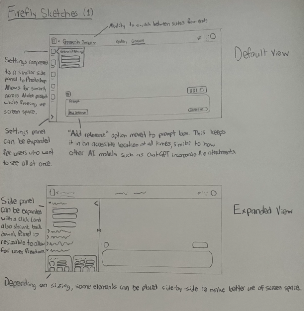
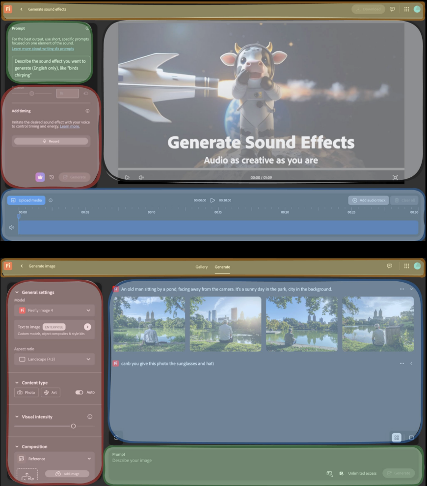

Familiar, but not familiar enough
Firefly borrowed Adobe’s visual language without consistently matching the behavior experienced users expected.
Systems thinking · Interaction design · Adobe Firefly Unified Prompting
A shared interface grammar for Firefly’s image, video, and audio tools (designed for both Adobe experts and prompt-first newcomers).

The problem was not a missing feature. It was the growing number of interface rules a user had to remember.
Adobe asked us to explore prompting patterns across Firefly’s generative tools. Image, video, and sound effects offered related capabilities, but their layouts, prompt locations, settings, and pathways between tools did not consistently behave like parts of one product.
I created the project timeline, documented early inconsistencies, helped synthesize the research, and sketched a structure that could support different media without forcing every tool into an identical screen.


One group wanted fewer controls in the way. The other wanted those controls to behave more like Adobe.
The team observed people across a spectrum of Adobe and generative-AI familiarity, then compared Firefly with other Adobe products and adjacent generation tools. Prompt-first users tended to treat the properties panel as visual noise. Experienced Adobe users valued those controls, but expected a flexible side panel and stronger continuity with products they already knew.
Both groups encountered the same underlying cost: moving between tools interrupted their mental model. Prompt history disappeared, sound effects reorganized the workspace, and switching media required returning to the Firefly home screen.
Firefly borrowed Adobe’s visual language without consistently matching the behavior experienced users expected.
Some users worked through language; others relied on properties. The interface needed to support both without privileging either.
Layout changes and the trip back home made related generation tools feel like isolated destinations.
We chose a shared spatial model instead of one rigid template. Settings remain on the left, generated work occupies the central workspace, and prompting anchors the bottom edge. Each tool can still introduce medium-specific controls inside those predictable regions.
This reframed consistency as a transferable map. Users could carry orientation from image generation into video or sound without expecting the workflows themselves to be identical.

Consistency only helps when it preserves the choices people came for.
The final concept brought sound effects into the same broad layout as image and video generation. A collapsible, resizable properties panel gives experts detailed control while allowing prompt-first users to reclaim space. A switcher near the prompt keeps related tools within reach and creates a foundation for carrying work from one medium into another.
The wider team also proposed visible “thinking” feedback to distinguish model processing from interface failure and set more realistic expectations when a generation took time or returned an imperfect result.
The subtle changes balanced two very different (and very real) ways of working.
Adobe felt the layout followed our findings closely and considered it a strong redesign direction. They specifically valued that the changes were restrained: the concept made Firefly more consistent while balancing experienced Adobe users’ need for control with newcomers’ desire for a less overwhelming starting point.
The team delivered a high-fidelity static concept and presented the system to Adobe. We did not complete usability testing on the final design, so this case study treats the work as a reasoned direction (not a validated outcome).
If continuing today, I would prototype two focused tasks for both novice and experienced Adobe users: resize or dismiss the properties panel, then move an existing prompt into a second medium. I would measure orientation time, task success, incorrect navigation, and whether users understand what context carries between tools.